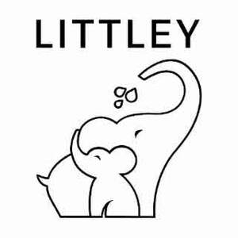

Trade Mark Journal No.2025/043 24 October 2025
UK00004279061 16 October 2025 (3,5,10,21,35)

- Class 3
- Hand cleansers; Hand soap; Hand lotions; Hand soaps; Hand lotion (Non-medicated -); Hand washes; Hand cleaner; Hand cream; Hand cleaners [hand cleaning preparations]; Hand scrubs; Cosmetic hand creams; Hand powders; Hand gels; Hand milks; Liquid soaps for hands and face; Moist paper hand towels impregnated with a cosmetic lotion; Toning lotion, for the face, body and hands; Hand masks for skin care; Wipes impregnated with a skin cleanser; Refill packs for hand soap dispensers; Softening cleanser [cosmetic]; Skin cleansing lotion; Hand cleaning preparations; Skin cleansers; Cloths impregnated with a skin cleanser; Paper hand towels impregnated with cosmetics; Creams (Soap -) for use in washing; Tissues impregnated with a skin cleanser; Skin cleansers [cosmetic]; Skin cleansing cream; Paper hand towels impregnated with cleaning agents; Skin cleansers [non-medicated]; Cleansing lotions; Cleansing creams; Disposable wipes impregnated with cleansing compounds for use on the face; Skin cleansing cream [non-medicated]; Baby wipes; Baby care products (Non-medicated -); Baby suncreams; Baby wipes impregnated with cleaning preparations; Oral hygiene preparations.
- Class 5
- Hand lotion (Medicated -); Medicated hand wash; Antibacterial hand lotions; Antibacterial facial cleanser; Antibacterial lathering cleanser; Hand creams for medical use; Moist paper hand towels impregnated with a pharmaceutical lotion; Antiseptic cleansers; Anti-bacterial face washes (Medicated -); Medicated lotions for the hands; Alcohol-based antibacterial skin sanitizer gels; Baby food; Baby diapers; Disposable baby diapers; Baby foods; Nappies as baby diapers; Food for babies; Food for babies and infants; Food preparations for babies and infants; Nappies for babies; Diapers for babies; Swim nappies, disposable, for babies; Swim diapers, disposable, for babies; Disposable swim diapers for babies; Medicated baby oils; Wipes impregnated with disinfectants for hygiene purposes; Cleaning cloths impregnated with disinfectant for hygiene purposes; Diaper changing mats, disposable, for babies; Nappies of cellulose for babies; Disposable diapers of cellulose for babies; Disposable swim diapers for children and infants; Nappy changing mats, disposable, for babies; Swim diapers, reusable, for babies; Food for infants; Swim nappies, reusable, for babies; Nappies of paper for babies; Paper nappies for babies; Disposable diapers of paper for babies; Baby bottom balms for medical purposes; Paper diapers for babies; Medicated baby powders; Disposable pet diapers; Napkins for babies; Nappies for babies and incontinents; Disinfectants for medical apparatus and instruments; Disinfectants for dental apparatus and instruments; Nasal sprays for medical purposes; Disinfectants for medical instruments; Solutions for medical use in washing the nasal passages; Nasal cleaning preparations for medical purposes; Cleaners [preparations] for sterilising surgical instruments; Disinfectants for medical use; Disinfectants for hygienic purposes; Sanitizing wipes; Disinfecting handwash; Disinfectant soap; Disposable sanitizing wipes; Sanitizers for household use; Antibacterial wipes; Antibacterial handwash; Sanitisers for household use; Sanitising wipes; Antibacterial handwashes; Anti-bacterial soap; Disposable sanitising wipes; Disinfectants; Antibacterial soap; Disinfectants for sanitary use; Disinfectants and antiseptics; Medicated and sanitising soaps and detergents; Impregnated antiseptic wipes; Antibacterial sprays; Moist wipes impregnated with a pharmaceutical lotion; Anti-microbial handwash; Disinfectants for hygiene purposes; Sanitizing wash for fruit and vegetables; Medicated handwash; Sanitizing preparations for hospital use; Antibacterial gels; Antibacterial acne preparations; Anti-bacterial preparations; Anti-microbial preparations.
- Class 10
- Baby feeding pacifiers; Pacifiers for babies; Baby feeding dummies; Baby bottles; Dummies [baby soothers]; Baby teething rings; Covers for baby feeding bottles; Baby dummies; Nipples for baby bottles; Baby bottle nipples; Pacifiers [babies dummies]; Feeding bottles for babies; Neonatal pacifiers; Incontinence sheets for use with babies; Gum massagers for babies; Nipples for babies feeding bottles; Air pillows for babies [medical purposes].
- Class 21
- Brushes for cleaning tanks and containers; Brushes with detergent containers; Cleaning brushes for feeding bottles; Brushes for feeding bottles; Bottles; Bottle cleaning brushes; Brushes for cleaning babies' feeding bottles; Empty spray bottles; Reusable bottles; Plastic water bottles; Dispensers for liquids for use with bottles; Plastic bottles; Cleaning brushes for feeding bottle teats; Feeding bottle brushes; Glass lids for industrial packaging containers; Glass containers.
- Class 35
- Retail services in relation to cleaning preparations; Online retail services relating to toys; Retail services in relation to cleaning articles; Mail order retail services for cosmetics; Distribution and dissemination of advertising materials [leaflets, prospectuses, printed material, samples]; Dissemination of advertising material [leaflets, brochures and printed matter]; Dissemination of advertising material [leaflets, brochure and printed matter]; Distribution of flyers, brochures, printed matter and samples for advertising purposes.
Littley LTD